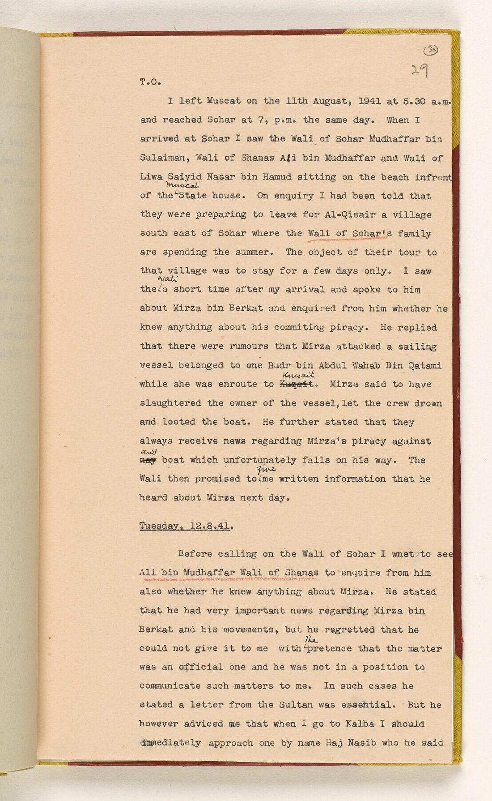
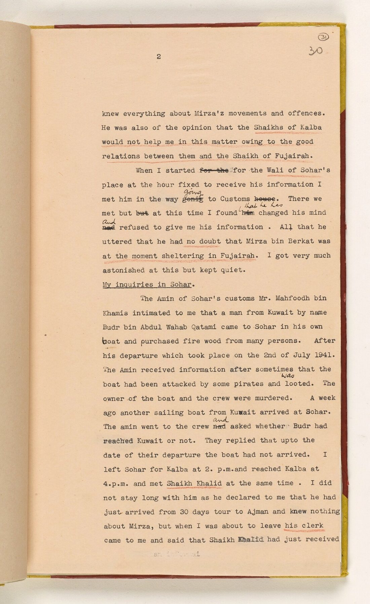

١١ و١٢ أغسطس ١٩٤١ · ورقتان مطبوعتان من تقرير جولة بريطانية على ساحل الباطنة
تقرير ضابط بريطاني من صحار يذكر بدر بن عبدالوهاب القطامي
ما هي
كتب ضابط أُرسل للبحث عن القرصان ميرزا بن بركات أن والي صحار سمع إشاعات بأن ميرزا هاجم «سفينة شراعية لبدر بن عبدالوهاب بن قطامي» وهي في طريقها إلى الكويت. وأضاف أمين جمرك صحار أن «رجلا من الكويت اسمه بدر بن عبدالوهاب قطامي جاء إلى صحار في سفينته واشترى الحطب من كثيرين»، وغادر في ٢ يوليو ١٩٤١. ثم وصل خبر بأن السفينة هوجمت وقُتل صاحبها وبحارتها، وقال بحارة كويتيون وصلوا قبل أسبوع من التقرير إن سفينته لم تكن قد وصلت الكويت بعد.
أهميتها
يُظهر بدرا نوخذة يملك سفينته ويتاجر بالحطب بين ساحل الباطنة والكويت سنة ١٩٤١.
من المقصود
بدر عبدالوهاب القطامي، المولود نحو ١٩١٠، ابن عبدالوهاب عبدالعزيز، وكان يملك سفنه ويبحر بها.
صور الصفحات


النص الأصلي
ملاحظات
خبر مقتله كان إشاعة فقط، فقد عاش بدر حتى ١ يناير ١٩٨٦.
أسماء أخرى
المصادر
سجلات مكتب الهند، المكتبة البريطانية، عبر مكتبة قطر الرقمية.
مرجع الأرشيف
- British Library, IOR/R/15/6/419, folios 30 and 31 · Qatar Digital Library
كيف كُتب هذا النص: اقتباس من الصور، والترجمة من Claude.
افتح في الموقع التفاعلي